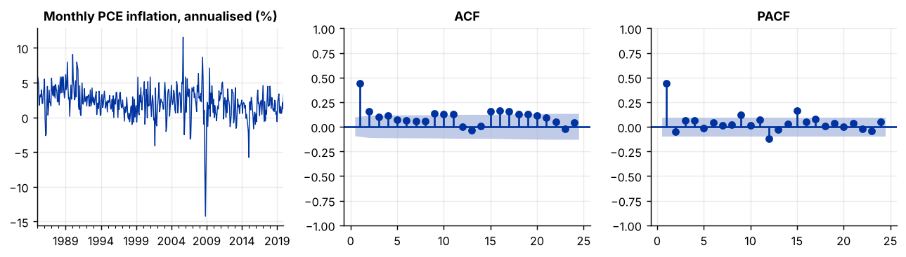
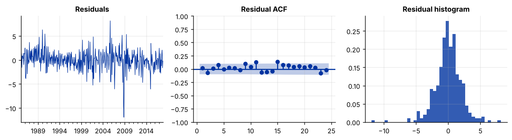
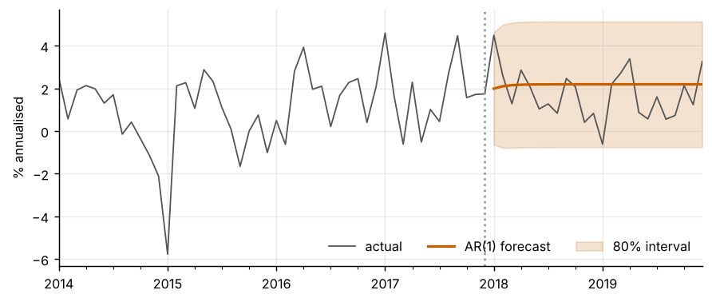

Step 1The question and the model
Many papers need a good univariate model: a forecast of inflation, a benchmark for a larger model, or a measure of how long a shock lasts. Our question is: how persistent is U.S. inflation, and can an ARIMA model forecast it better than a simple benchmark? We use monthly PCE inflation, \(\pi_t = 1200\,\Delta \ln P_t\), the annualised monthly change in the PCE price index.
An ARIMA(\(p,d,q\)) model says that the series, differenced \(d\) times, follows an ARMA process:
where \(L\) is the lag operator and \(\varepsilon_t\) is white noise. A seasonal ARIMA adds the same kind of polynomial at the seasonal lag \(s\) (12 for monthly data), written \((P,D,Q)_s\).
| Symbol | Meaning | How you choose it |
|---|---|---|
| \(d\) | number of times the series is differenced | unit-root and stationarity tests, then forecast performance |
| \(p\) | number of autoregressive lags | PACF, then information criteria |
| \(q\) | number of moving-average lags | ACF, then information criteria |
| \((P,D,Q)_{12}\) | seasonal orders | test for seasonality in the residuals |
Before you estimate anything
Decide what the model is for. If the goal is to forecast, judge it by out-of-sample errors. If the goal is to describe persistence, judge it by the diagnostics and the autoregressive roots. The same model is not always best for both, and your paper should say which goal it serves.
How to write it: model section
We model monthly U.S. inflation, \(\pi_t = 1200\,\Delta\ln P_t\), where \(P_t\) is the PCE price index, with an ARIMA(\(p,d,q\)) model. The orders are chosen by the Bayesian information criterion over \(p,q \le 3\), after the differencing order is set by unit-root and stationarity tests. We check the residuals for autocorrelation, conditional heteroskedasticity and seasonality, and we compare out-of-sample forecasts with a historical-mean benchmark using the Diebold–Mariano test.
Step 2Load the data and look at the series
import warnings; warnings.filterwarnings("ignore")
import numpy as np, pandas as pd
import matplotlib.pyplot as plt
from statsmodels.tsa.stattools import adfuller, kpss, acf, pacf
from statsmodels.graphics.tsaplots import plot_acf, plot_pacf
df = pd.read_csv("us_monthly.csv", parse_dates=["date"]).set_index("date")
infl = (1200 * np.log(df.pcepi).diff()).dropna()["1985":"2019"]
infl.index.freq = "MS"
print(infl.index[0].strftime("%Y-%m"), "to", infl.index[-1].strftime("%Y-%m"), "|", len(infl), "months")
print(infl.describe().round(2).loc[["mean", "std", "min", "max"]])
fig, ax = plt.subplots(1, 3, figsize=(10, 2.9))
infl.plot(ax=ax[0], lw=.8, title="Monthly PCE inflation, annualised (%)"); ax[0].set_xlabel("")
plot_acf(infl, lags=24, ax=ax[1], title="ACF", zero=False); plot_pacf(infl, lags=24, ax=ax[2], title="PACF", zero=False, method="ywm")
plt.tight_layout()1985-01 to 2019-12 | 420 months mean 2.15 std 2.25 min -14.25 max 11.53 Name: pcepi, dtype: float64

How to read it
The sample has 420 months from 1985-01 to 2019-12. Annualised inflation averages 2.15% with a standard deviation of 2.25. The extremes are the surge after Hurricane Katrina in September 2005 (11.53) and the fall in energy prices in November 2008 (−14.25), so the series has a few large outliers. The first autocorrelation is 0.44 and the later ones fall slowly but stay positive (0.15, 0.10, 0.12 at lags 2 to 4). The PACF has one clear spike at lag 1 and is small afterwards. That pattern points to a first-order autoregression, with the slow tail of the ACF hinting at a mean that moves over time.
Step 3Choose the differencing order d
a = adfuller(infl, autolag="AIC")
k = kpss(infl, regression="c", nlags="auto")
print(f"ADF (H0: unit root) statistic = {a[0]:6.2f} p-value = {a[1]:.3f}")
print(f"KPSS (H0: stationary) statistic = {k[0]:6.2f} p-value = {k[1]:.3f} (reported as 0.01 when smaller)")
for lo, hi in [("1985", "1999"), ("2000", "2019")]:
s = infl[lo:hi]
print(f"mean {lo}-{hi}: {s.mean():.2f} std: {s.std():.2f}")ADF (H0: unit root) statistic = -3.56 p-value = 0.007 KPSS (H0: stationary) statistic = 1.28 p-value = 0.010 (reported as 0.01 when smaller) mean 1985-1999: 2.62 std: 1.84 mean 2000-2019: 1.80 std: 2.46
How to read it
The two tests disagree. The ADF test rejects a unit root (statistic −3.56, p = 0.007) and the KPSS test rejects stationarity (statistic 1.28, p below 0.01). This is the usual sign of a mean that shifts: average inflation was 2.62% in 1985–1999 and 1.80% in 2000–2019, and the volatility rose from 1.84 to 2.46. The first-order autocorrelation of 0.44 is far from one, so we take \(d=0\) with a constant as the baseline. Because the mean moved, we also keep \(d=1\) as a competitor and judge it by forecasts, not by information criteria. If a break in the mean is the main issue in your paper, see the Bai–Perron guide.
Step 4Choose p and q
from statsmodels.tsa.arima.model import ARIMA
train, test = infl[:"2017"], infl["2018":] # keep 24 months for the forecast comparison
rows = []
for p in range(4):
for q in range(4):
r = ARIMA(train, order=(p, 0, q), trend="c").fit()
rows.append((p, q, r.aic, r.bic))
grid = pd.DataFrame(rows, columns=["p", "q", "AIC", "BIC"])
print("Best five by BIC")
print(grid.sort_values("BIC").head(5).round(1).to_string(index=False))
print("\nBest by AIC:", grid.sort_values("AIC").iloc[0][["p", "q"]].astype(int).tolist())Best five by BIC p q AIC BIC 1 0 1701.4 1713.4 1 2 1698.1 1718.0 1 1 1702.2 1718.1 2 0 1702.5 1718.4 0 2 1703.3 1719.2 Best by AIC: [1, 3]
How to read it
BIC picks \(p=1, q=0\) (BIC 1713.4). The next-best model, ARMA(1,2), lowers the AIC by 3.3 points but raises the BIC by 4.6. AIC alone would choose a larger model, ARMA(1,3), because it penalises extra parameters less. When the two criteria disagree, report both and prefer the smaller model unless the diagnostics demand more. Here we take the AR(1) and check the diagnostics next.
Step 5Estimate the model and check its roots
m = ARIMA(train, order=(1, 0, 0), trend="c").fit()
print(m.summary().tables[1])
print("\nModulus of the AR root:", np.abs(m.arroots).round(2))
phi = m.params["ar.L1"]
print(f"Half-life of a shock: {np.log(0.5) / np.log(phi):.1f} months")==============================================================================
coef std err z P>|z| [0.025 0.975]
------------------------------------------------------------------------------
const 2.1882 0.191 11.452 0.000 1.814 2.563
ar.L1 0.4448 0.031 14.207 0.000 0.383 0.506
sigma2 4.2332 0.204 20.777 0.000 3.834 4.633
==============================================================================
Modulus of the AR root: [2.25]
Half-life of a shock: 0.9 monthsHow to read it
The autoregressive coefficient is 0.445 with a standard error of 0.031 (z = 14.2). The constant, 2.19, is the mean of the process in percent per year, because statsmodels parameterises the constant as the mean. The AR root has modulus 2.25, outside the unit circle, so the process is stationary. A shock to annualised inflation loses half of its effect in 0.9 months. In other words, month-to-month noise dominates and the persistence in monthly PCE inflation is low.
How to write it: results
The AR(1) model gives \(\hat\phi = 0.445\) (s.e. 0.031) and a mean inflation rate of 2.19% per year. The autoregressive root lies outside the unit circle, and a shock loses half of its effect in less than one month. Month-to-month PCE inflation is therefore only weakly persistent in our sample.
Step 6Diagnostics on the residuals
from statsmodels.stats.diagnostic import acorr_ljungbox, het_arch
from scipy import stats
import statsmodels.formula.api as smf
res = m.resid[1:]
lb = acorr_ljungbox(res, lags=[6, 12, 24], return_df=True)
print("Ljung-Box test of no autocorrelation")
print(lb.round(3).to_string())
print(f"\nJarque-Bera (normality): statistic = {stats.jarque_bera(res)[0]:8.1f} p-value = {stats.jarque_bera(res)[1]:.3f}")
print(f"ARCH-LM, 12 lags: statistic = {het_arch(res, nlags=12)[0]:8.1f} p-value = {het_arch(res, nlags=12)[1]:.3f}")
seas = smf.ols("e ~ C(m)", pd.DataFrame({"e": res.values, "m": res.index.month})).fit()
print(f"Month dummies in residuals: F = {seas.fvalue:.2f} p-value = {seas.f_pvalue:.3f}")
fig, ax = plt.subplots(1, 3, figsize=(10, 2.8))
res.plot(ax=ax[0], lw=.7, title="Residuals"); ax[0].set_xlabel("")
plot_acf(res, lags=24, ax=ax[1], title="Residual ACF", zero=False)
ax[2].hist(res, bins=40, density=True, alpha=.8); ax[2].set_title("Residual histogram")
plt.tight_layout()Ljung-Box test of no autocorrelation
lb_stat lb_pvalue
6 4.949 0.550
12 18.949 0.090
24 40.476 0.019
Jarque-Bera (normality): statistic = 327.9 p-value = 0.000
ARCH-LM, 12 lags: statistic = 52.6 p-value = 0.000
Month dummies in residuals: F = 2.48 p-value = 0.005
How to read it
There is no sign of remaining autocorrelation up to 12 lags (Ljung–Box p = 0.55 at lag 6 and 0.09 at lag 12), although a little remains at lag 24 (p = 0.019). Three other tests reject. The Jarque–Bera statistic is 327.9 (p below 0.001), because of the fat tails produced by the 2005 and 2008 outliers. The ARCH-LM statistic is 52.6 (p below 0.001), so volatility clusters in time. A joint test of month dummies in the residuals gives F = 2.48 (p = 0.005), so some seasonality remains in this seasonally adjusted series. The practical meaning is that the point forecasts are reasonable, but confidence bands built on normal, constant-variance errors are not reliable. The GARCH guide shows the remedy for the volatility.
Step 7Does a seasonal term help? SARIMA
from statsmodels.tsa.statespace.sarimax import SARIMAX
s = SARIMAX(train, order=(1, 0, 0), seasonal_order=(1, 0, 0, 12), trend="c").fit(disp=False)
print("Seasonal AR(1) coefficient at lag 12:", round(s.params["ar.S.L12"], 3), " p-value:", round(s.pvalues["ar.S.L12"], 3))
D = pd.get_dummies(infl.index.month, prefix="m", drop_first=True).astype(float); D.index = infl.index
d = ARIMA(train, exog=D[:"2017"], order=(1, 0, 0), trend="c").fit()
dum = [n for n in d.params.index if n.startswith("m_")]
w = d.wald_test(", ".join(f"{n}=0" for n in dum), scalar=True)
print(f"Joint test that the 11 month dummies are zero: chi2 = {float(w.statistic):.1f} p-value = {float(w.pvalue):.4f}")
print(pd.DataFrame({"AIC": [m.aic, s.aic, d.aic], "BIC": [m.bic, s.bic, d.bic]},
index=["AR(1)", "SARIMA (1,0,0)(1,0,0)12", "AR(1) + month dummies"]).round(1))Seasonal AR(1) coefficient at lag 12: -0.059 p-value: 0.208
Joint test that the 11 month dummies are zero: chi2 = 31.5 p-value = 0.0009
AIC BIC
AR(1) 1701.4 1713.4
SARIMA (1,0,0)(1,0,0)12 1702.1 1718.0
AR(1) + month dummies 1695.1 1750.8How to read it
The seasonal autoregressive term at lag 12 is small and insignificant (−0.059, p = 0.21), and the SARIMA model has higher information criteria than the AR(1) (BIC 1718.0 against 1713.4). The 11 month dummies are jointly significant (χ² = 31.5, p = 0.0009) and lower the AIC from 1701.4 to 1695.1, but they raise the BIC from 1713.4 to 1750.8 because they add 11 parameters. The conclusion is that a small residual seasonality exists even after seasonal adjustment, but it is too weak to justify a seasonal model under BIC. The next step checks whether it helps forecasts.
Step 8Compare forecasts out of sample
from statsmodels.stats.sandwich_covariance import cov_hac
import statsmodels.api as sm
H = [1, 3, 12]
origins = pd.date_range("2012-12-01", "2018-12-01", freq="MS") # expanding window, re-estimated every month
specs = {"Historical mean": None,
"AR(1)": dict(order=(1, 0, 0), trend="c"),
"ARMA(1,1)": dict(order=(1, 0, 1), trend="c"),
"ARIMA(1,1,1)": dict(order=(1, 1, 1), trend="n"),
"SARIMA (1,0,0)(1,0,0)12": dict(order=(1, 0, 0), trend="c", seasonal_order=(1, 0, 0, 12))}
err = {k: {h: {} for h in H} for k in specs}
for o in origins:
y = infl[:o]
for k, sp in specs.items():
fc = np.repeat(y.mean(), 12) if sp is None else (SARIMAX(y, **sp).fit(disp=False) if "seasonal_order" in sp else ARIMA(y, **sp).fit()).forecast(12).values
for h in H:
t = o + pd.DateOffset(months=h)
if t in infl.index:
err[k][h][t] = infl[t] - fc[h - 1]
rmse = pd.DataFrame({k: {f"h = {h}": np.sqrt(np.mean(np.square(list(v[h].values())))) for h in H} for k, v in err.items()})
print("Root mean squared forecast error, percentage points (annualised inflation)")
print(rmse.round(2).to_string())
print("number of forecasts per horizon:", {f"h={h}": len(err["AR(1)"][h]) for h in H})
def dm(e1, e2, h): # Diebold-Mariano test on squared errors, HAC variance
idx = sorted(set(e1) & set(e2))
dd = np.array([e1[t] ** 2 - e2[t] ** 2 for t in idx])
r = sm.OLS(dd, np.ones(len(dd))).fit(cov_type="HAC", cov_kwds={"maxlags": max(h, 1)})
return r.tvalues[0], r.pvalues[0]
print("\nDiebold-Mariano test, loss differential = squared error of the row model minus the historical mean")
for k in list(specs)[1:]:
print(f"{k:26s}", " ".join(f"h={h}: t = {dm(err[k][h], err['Historical mean'][h], h)[0]:5.2f} (p = {dm(err[k][h], err['Historical mean'][h], h)[1]:.2f})" for h in H))Root mean squared forecast error, percentage points (annualised inflation)
Historical mean AR(1) ARMA(1,1) ARIMA(1,1,1) SARIMA (1,0,0)(1,0,0)12
h = 1 1.94 1.69 1.70 1.61 1.70
h = 3 1.93 1.89 1.91 1.70 1.92
h = 12 1.86 1.87 1.87 1.69 1.91
number of forecasts per horizon: {'h=1': 73, 'h=3': 73, 'h=12': 73}
Diebold-Mariano test, loss differential = squared error of the row model minus the historical mean
AR(1) h=1: t = -1.76 (p = 0.08) h=3: t = -1.90 (p = 0.06) h=12: t = 2.47 (p = 0.01)
ARMA(1,1) h=1: t = -1.77 (p = 0.08) h=3: t = -1.83 (p = 0.07) h=12: t = 2.61 (p = 0.01)
ARIMA(1,1,1) h=1: t = -1.92 (p = 0.05) h=3: t = -2.12 (p = 0.03) h=12: t = -1.62 (p = 0.10)
SARIMA (1,0,0)(1,0,0)12 h=1: t = -1.68 (p = 0.09) h=3: t = -0.40 (p = 0.69) h=12: t = 2.19 (p = 0.03)How to read it
We re-estimate each model every month from 2012-12 to 2018-12 and forecast 1, 3 and 12 months ahead, which gives 73 forecasts per horizon. At one month, the AR(1), ARMA(1,1) and SARIMA models have an RMSE of about 1.70 against 1.94 for the historical mean, a gain of roughly 12%, but the Diebold–Mariano tests are only marginal (p = 0.08 to 0.09). At 12 months the stationary models are no better than the mean, and slightly worse (AR(1) 1.87 against 1.86, DM p = 0.01 because the loss is consistently a little higher). The ARIMA(1,1,1) with \(d=1\) has the lowest error at every horizon (1.61, 1.70 and 1.69) and beats the mean at the 5% level for one and three months (p = 0.05 and 0.03) and at the 10% level for 12 months (p = 0.10). This fits the mean shift found in step 3: a model with \(d=1\) follows the local level of inflation, which fell during the sample. The seasonal term does not help (SARIMA is no better than the AR(1) at any horizon). Treat the result with care: it comes from one sample, the forecasts overlap, and we compared several models.
How to write it: forecast comparison
We evaluate forecasts one, three and twelve months ahead with an expanding window from December 2012 to December 2018, re-estimating every model each month (73 forecasts per horizon). The ARIMA(1,1,1) has the lowest root mean squared error at every horizon, 1.61, 1.70 and 1.69 percentage points, against 1.94, 1.93 and 1.86 for the historical mean. The Diebold–Mariano test rejects equal accuracy at the 5% level for one and three months (p = 0.05 and 0.03). The stationary ARMA models improve on the historical mean only at the one-month horizon, and the seasonal term adds no accuracy.
Step 9Forecast and confidence band
fc = m.get_forecast(steps=24)
band = fc.conf_int(alpha=.20)
fig, ax = plt.subplots(figsize=(8, 3.2))
infl["2014":].plot(ax=ax, lw=1, color="#555", label="actual")
fc.predicted_mean.plot(ax=ax, color="#c46000", lw=1.8, label="AR(1) forecast")
ax.fill_between(band.index, band.iloc[:, 0], band.iloc[:, 1], color="#c46000", alpha=.18, label="80% interval")
ax.axvline(pd.Timestamp("2017-12-01"), color="#999", ls=":"); ax.set_xlabel(""); ax.set_ylabel("% annualised"); ax.legend(frameon=False, ncol=3)
cover = ((test >= band.iloc[:, 0]) & (test <= band.iloc[:, 1])).mean()
print(f"The 80% interval contains {cover:.0%} of the 24 actual values in 2018-2019.")The 80% interval contains 100% of the 24 actual values in 2018-2019.

How to read it
The forecast from the AR(1) returns to the mean of 2.19% within a few months, which is what a stationary model should do: it has no information about the level beyond the near future. The 80% band is wide and contains all 24 observations of 2018–2019 (100%, against the nominal 80%). The band is too wide because the error variance was estimated from 1985–2017, a period that includes the 2005 and 2008 outliers, while 2018–2019 was calm. This is the volatility clustering that the ARCH test found. A GARCH model would give a band that narrows in calm periods and widens in turbulent ones.
Step 10What to report in the paper
| Item | What to show |
|---|---|
| Data | source, sample, transformation, and the unit-root and stationarity tests with both p-values |
| Orders | the grid of AIC and BIC, and a sentence saying which criterion was used |
| Estimates | coefficients with standard errors, the AR root, and the half-life of a shock |
| Diagnostics | Ljung–Box at three lags, ARCH-LM, and the test for residual seasonality |
| Forecasts | RMSE by horizon, the benchmark, the Diebold–Mariano test, and the forecast window |
Common mistakes
- Comparing AIC across different \(d\). A model with \(d=1\) is fitted to a different series, so its information criteria cannot be compared with those of a model with \(d=0\). Choose \(d\) by tests and forecasts.
- Reporting in-sample fit as forecasting ability. Always hold out data or use an expanding window.
- Ignoring conditional heteroskedasticity. Point forecasts can be fine while the confidence bands are wrong. If the ARCH test rejects, see the GARCH guide.
- Forcing a seasonal term on seasonally adjusted data. Test for it first. Keep it only if it improves forecasts.